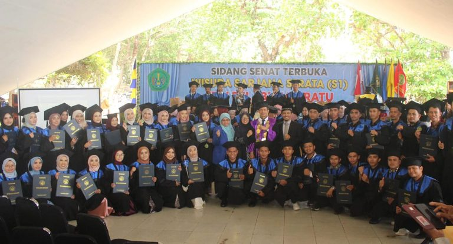
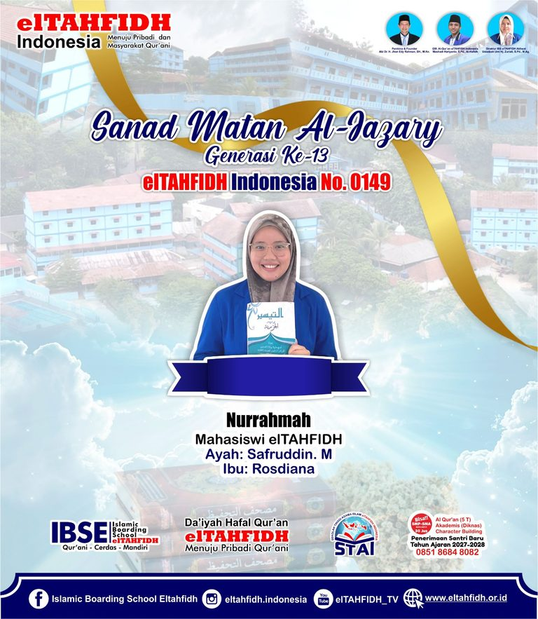
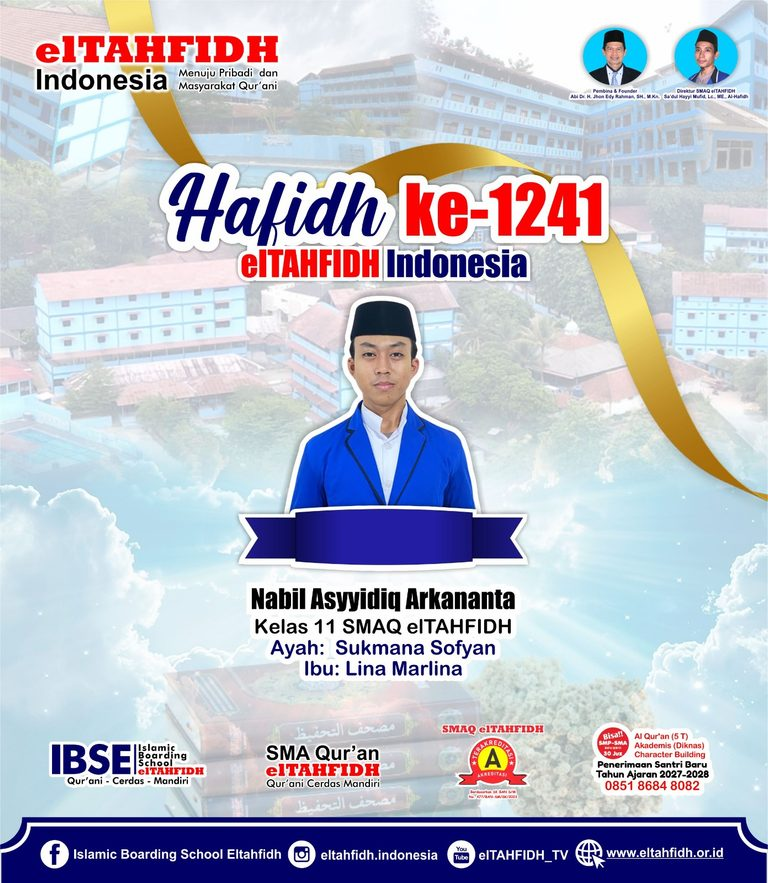
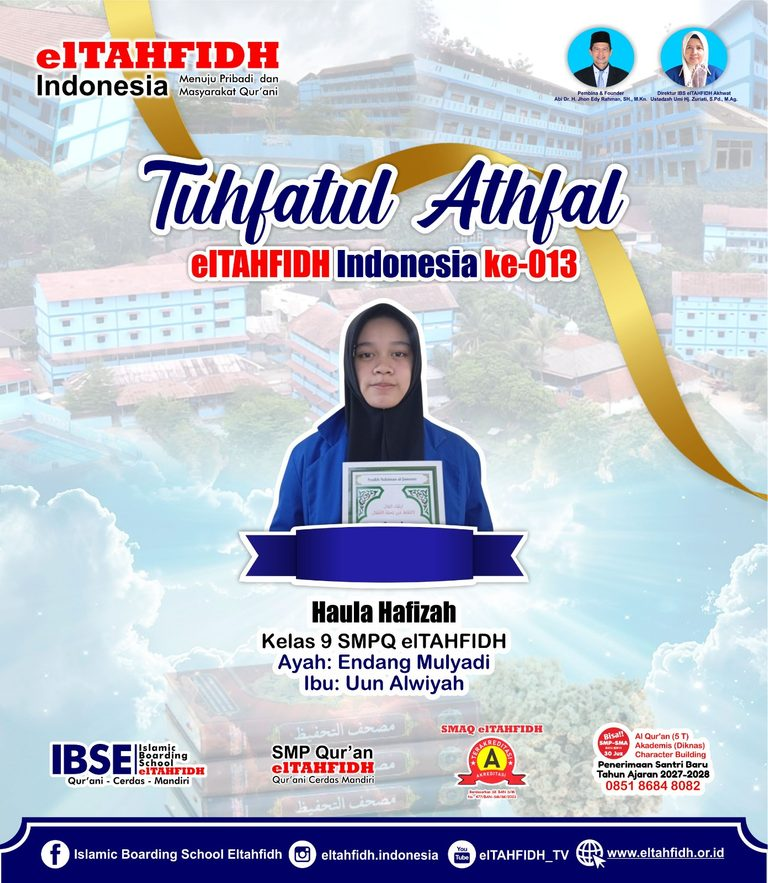
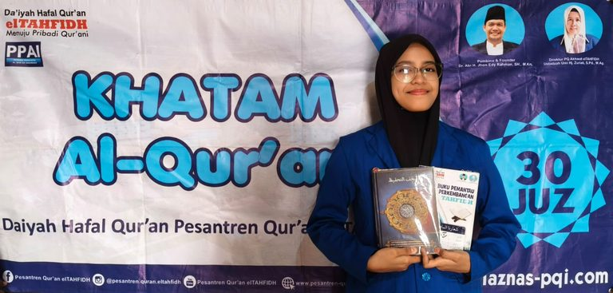
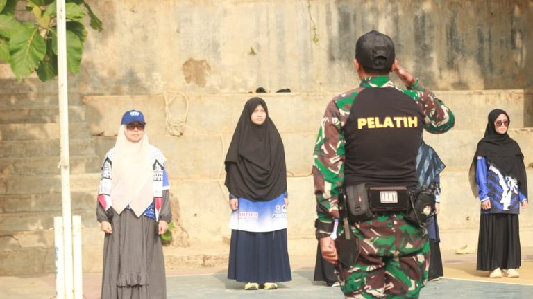
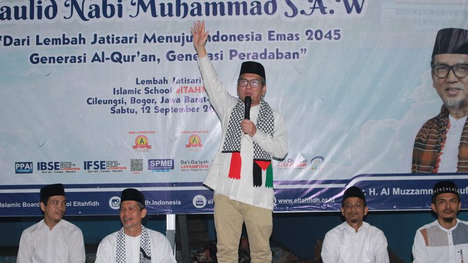

Wisuda 38 Da’i-Yah elTAHFIDH : Lulus S1, Hafidz 30 Juz & Sabuk Hitam
SUKABUMI — Ada pemandangan yang berbeda dan menggetarkan hati Jawa Barat pada Sabtu, 03 Oktober 2026. Yang berada di Hotel
Kabar terbaru kegiatan santri, prestasi, dan program elTAHFIDH Indonesia.

SUKABUMI — Ada pemandangan yang berbeda dan menggetarkan hati Jawa Barat pada Sabtu, 03 Oktober 2026. Yang berada di Hotel

CILEUNGSI — Semangat menuntut ilmu agama dan menjaga kemurnian bacaan Al-Qur’an terus berkobar di kampus elTAHFIDH. Pada hari ini, Senin,

BOGOR — Suasana haru, bangga, dan penuh rasa syukur menyelimuti keluarga besar SMA IBS elTAHFIDH Akhwat pada hari Selasa (29/9/2026).

BOGOR — Cahaya Al-Qur’an kembali memancar terang dari kawasan Cileungsi, Kabupaten Bogor. Tepat pada hari yang penuh kemuliaan, Jumat (25/9/2026),

Rasa syukur dan haru menyelimuti keluarga besar Islamic Boarding School (IBS) elTAHFIDH pada hari Jum’at yang penuh berkah, 25 September

BOGOR — Suasana penuh haru dan rasa syukur menyelimuti lingkungan lembaga pendidikan elTAHFIDH pada hari Sabtu (26/9/2026). Alhamdulillah, salah satu
BOGOR — elTAHFIDH Indonesia kembali memperkuat komitmennya dalam meningkatkan kualitas sumber daya manusia melalui kegiatan Training Human Resource &…
Bogor, 13 September 2026 – Founder & CEO elTAHFIDH Indonesia, Abi Dr. H. Jhon Edy Rahman, S.H., M.Kn., memberikan arahan

BOGOR, 13 September 2026 — elTAHFIDH Indonesia menggelar Leadership & Management Training (LMT) bagi siswa-siswi jenjang SMP dan SMA Islamic
Cileungsi, 12 September 2026 — Sabtu sore menjadi momentum istimewa bagi keluarga besar Islamic Boarding School elTAHFIDH dengan hadirnya Ust.

BOGOR — Keluarga besar elTAHFIDH Indonesia menggelar Gebyar Maulid Nabi Muhammad SAW. 1448 H pada Sabtu, 12 September 2026. Bertempat
elTAHFIDH Indonesia meluncurkan sebuah ikhtiar baru bernama elTAHFIDH Global Working—sebuah program yang membuka jalan bagi anak-anak bangsa untuk…